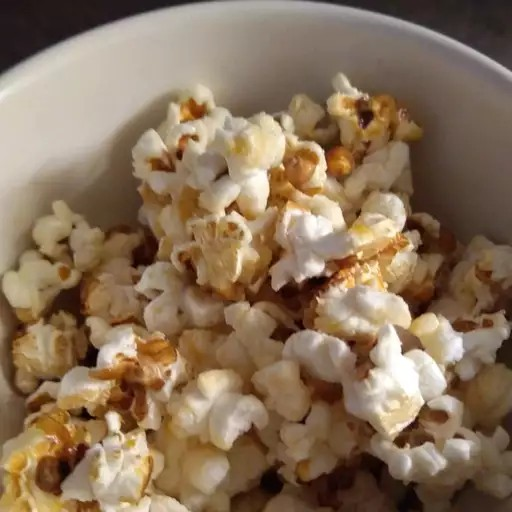

Popcorn Recipe

A homemade popcorn recipe!
Want to make your own sweet tasting popcorn for family movie night? Try this recipe out!
Ingredients
- 1/4 cup vegetable oil
- 1/2 cup unpopped popcorn kernels
- 1/4 cup white sugar
Steps
- Heat vegetable oil in a large pot over medium heat. Stir in popcorn kernels and sugar.
- Cover and shake the pot constantly to prevent sugar from burning. When popping has slowed to once every 2 to 3 seconds, remove the pot from the heat and shake for a few minutes until popping stops.
- Pour popcorn into a large bowl and allow to cool, stirring occasionally to break up large clumps.